The Slutsky decomposition — and why a 45% energy-price spike calls for a cash transfer, not a price cap.
Dr. Richeng Piao
Department of Economics
Northeastern University
Learning Objectives
By the end of class today, you will be able to…
6.1
Distinguish the substitution and income channels by which a price change moves Marshallian demand — and articulate why a price cap and a lump-sum transfer are not equivalent policies. (Bloom L4)
6.2
Set up the expenditure-minimization problem; derive Hicksian (compensated) demand \(h_i(p, \bar u)\) and the expenditure function \(e(p, \bar u)\); state the duality identity. (Bloom L4)
6.3
Derive and apply the Slutsky equation \(\partial x_i/\partial p_j = \partial h_i/\partial p_j - x_j \, \partial x_i/\partial I\); decompose a Cobb-Douglas and a quasilinear price change. (Bloom L5)
6.4
Classify goods as normal, inferior, or Giffen using the sign pattern of substitution and income effects; diagnose Carlos's canned-soup decomposition and Maya's labor-supply knife-edge, and recognise a Giffen good when you meet one. (Bloom L5)
6.5
Read the empirical decomposition of the 2022 US gas-price spike and the Engel-curve evidence from the BLS CEX as confirmation (not assumption) of the Slutsky structure. (Bloom L4)
April 2022 — the UK energy-price cap
+45%
cap raised in real terms
−14%
average household energy use
−6%
welfare loss, bottom half (unmitigated)
The policy choice: cap the price at last year's level, or let prices rise and hand low-income households cash transfers. Two policies, two different levers — and as Levell, O'Connell & Smith (IFS / Cowles, 2024) document in transaction-level data:
Own-price elasticity of energy demand \(\;\varepsilon_D \in [-0.45,\, -0.31]\) — strong substitution channel. Expenditure elasticity rises from 0.4 (bottom half) to 0.8 (top quintile) — income channel matters too, and unevenly.
A price spike shrinks the whole budget — not just energy
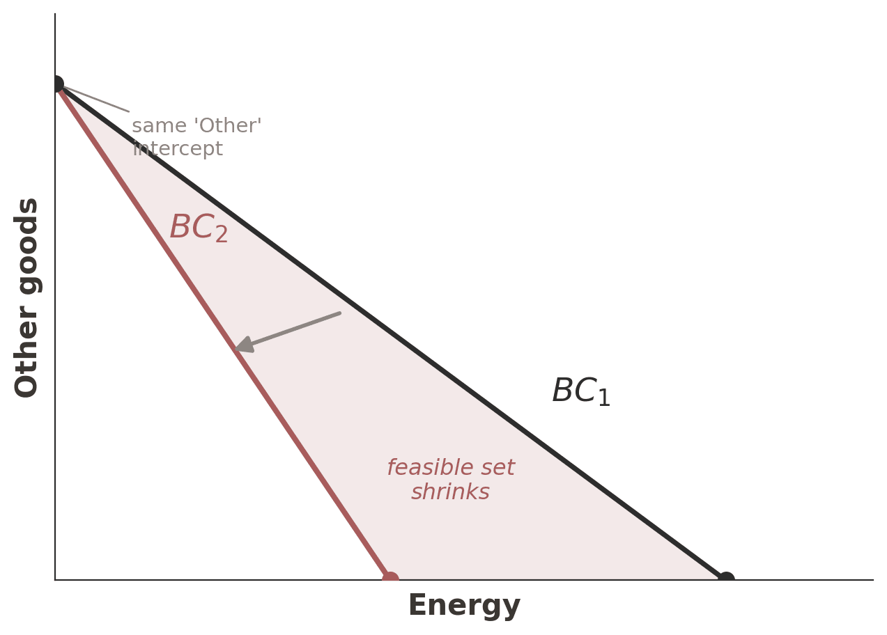
A higher energy price pivots the budget line inward around the unchanged “Other goods” intercept: income is the same, but each unit of energy now costs more.
The shaded wedge of bundles is now unaffordable.
To keep buying energy, the household must give up other goods — the bill reaches beyond the meter.
That squeeze on everything else is the income effect; a cash transfer pushes the whole line back out.
Two policies, two motions: a price cap kills the pivot (substitution); a cash transfer shifts the line out (income).
Two channels, one price spike
Substitution channel
Energy is now expensive relative to everything else. The household
turns down the thermostat,
weatherizes windows,
runs the dishwasher off-peak,
defers the next clothes-dryer purchase.
This response would happen even if real income were unchanged.
Income channel
The price spike makes the household effectively poorer (real income falls).
A poorer household cuts spending everywhere — including on necessary energy use that was not substitution-driven at all.
This response would happen even at unchanged prices if income fell by the same dollar amount.
Policy punchline. A price cap mutes substitution (preserves the old price, so the household conserves less). A targeted lump-sum transfer leaves the price signal sharp but neutralizes the income effect for households that need it. The two policies are not equivalent.
Energy is dearer relative to other goods, so the household substitutes away from it. Always this direction — the compensated move, with real income held fixed.
The guaranteed-negative piece behind the law of demand.
Income effect
A dearer energy bill erodes real income — the same paycheck buys less:
Both fall for normal goods; if energy were inferior the income effect flips (the Giffen case, §6.2).
Total move = substitution + income. The demand response you actually observe stacks the always-negative pivot on top of the real-income loss — and that sum is the Slutsky equation, next.
Poll: two 50% price rises — which one hits everything else harder?
Two things you buy go up 50% this year: a campus coffee and your rent. Which price rise has the larger income effect — the bigger squeeze on everything else you buy?
A) Coffee — you buy it every day, so it hits constantly
B) Rent — it is a far larger share of your budget
C) The same — both rose 50%
D) Can’t say without knowing your preferences
60 sec to vote
Answer: B — the income channel scales with the budget share
A 50% rise costs you 50% of what you were already spending.
On a \$2,000 month with \$800 rent and \$40 of coffee, the rent rise takes \$400 — 20% of the whole budget;
the coffee rise takes \$20 — 1%. Same percentage, twentyfold difference in bite.
A confuses frequency with share — a daily purchase can still be a rounding error.
C applies the same percentage to very different bases.
D is the reflex that everything needs preferences: preferences set the substitution channel,
but the income channel’s size is carried by how much you were buying, which is observable.
And the substitution channel ranks the other way. Coffee has close substitutes — make it at home,
dining hall, skip it. Rent has almost none inside a semester. So coffee is mostly substitution,
rent is mostly income — two goods, two channels, opposite order.
Wednesday the Slutsky equation writes that multiplier down explicitly — the income term carries a factor of
how much of the good you were buying.
§6.1 Pure-income changes
10 min · Warm-up: dissect the income channel alone, before we add the price channel
Pure-income thought experiment: Sam's raise
Sam allocates \$60/month between Netflix (\$4) and Spotify (\$6). Cobb-Douglas with \(\alpha = 1/3\). His income doubles to \$120 — neither price changes.
A → B: both Netflix and Spotify rise (both normal under Cobb-Douglas).
IC0 → IC1: Sam reaches a strictly higher utility.
Bundles \(A\) and \(B\) lie on a ray from the origin (slope \((1{-}\alpha) p_1 / (\alpha\, p_2) = 4/3\)) — a Cobb-Douglas signature we return to shortly.
Empirical claim. Income doubled, both quantities doubled. Both income elasticities \(=1\) — the Cobb-Douglas signature.
When one good is inferior (Carlos's case)
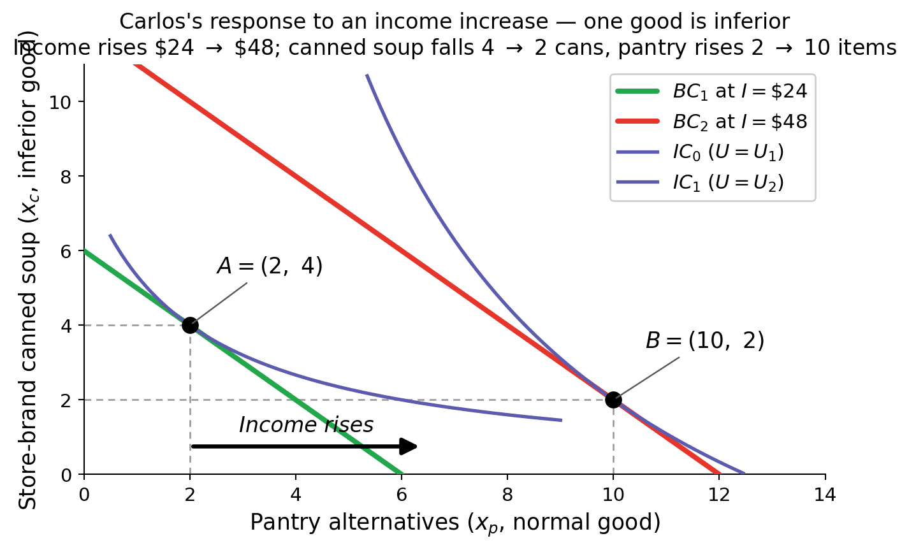
Contrast with Sam:
Same parallel BC shift — income channel only, slope \(-p_p/p_c\) unchanged.
Pantry alternatives \(\uparrow\): 2 \(\to\) 10 items — normal good.
Optimum moves down-right (not up-right) — the income expansion path bends backward on the inferior axis.
Carlos <-> W6.3 preview. Same character returns in §6.4.3 with a price shock on canned soup — Slutsky decomposition shows a perverse income effect that partially offsets substitution.
Income elasticity: necessity, luxury, inferior
\[\varepsilon_I \;=\; \frac{\Delta x / x}{\Delta I / I}\;=\;\frac{\partial x}{\partial I}\cdot\frac{I}{x}.\]
Sign of \(\varepsilon_I\) sets normal vs. inferior; magnitude inside the normal range further splits necessity vs. luxury.
Necessity
\(0 < \varepsilon_I < 1\)
Quantity rises with income, slower than income. Budget share falls. Examples: toothpaste, salt, food-at-home, electricity.
Quantity falls as income rises. Trade up to a preferred alternative. Examples: store-brand canned soup, bus rides, used cars, ramen.
Adding-up constraint. Not every good can be inferior simultaneously. If Sam cuts bus rides when his income rises, the saved dollars go somewhere. At least one good in the bundle must be normal.
Normal vs. inferior can flip with income level. A used car is normal at low income (any car beats the bus) and inferior at high income (new cars supplant used ones).
Sam's income rises from \$60 to \$90 (\(\Delta I/I = +50\%\)). His Netflix subs jump 5 \(\to\) 7; Spotify 6.67 \(\to\) 10. Necessity, luxury, or right at the boundary?
Compute \(\varepsilon_I\) for each good. Press → to reveal.
Unit-elastic — the Cobb-Douglas signature. Budget share constant.
Pure Cobb-Douglas would put \(\varepsilon_I = 1\) on both goods. Netflix's 0.80 reads as a slight discretionary-purchase signature at low income — small wedge off the unit-elastic benchmark.
Income Expansion Path and Engel curve
Income Expansion Path (IEP)
Trace the consumer's optimum bundle from \(I = 0\) (the origin) through every increasing income level. Connect the tangencies.
Two normal goods: IEP slopes upward — every income increase moves the bundle northeast.
Normal + eventually-inferior: IEP bends backward on the inferior axis past some income threshold.
Lives in the same \((x_1, x_2)\) plane as the indifference curves.
Engel curve (Engel, 1857)
Replot: income on the vertical axis, quantity of one good on the horizontal. One point per IEP point.
Positive slope ⇒ normal good at that income.
Negative slope ⇒ inferior at that income.
Backward bend ⇒ normal-to-inferior transition.
Engel curve = empirical workhorse. Household surveys (BLS CEX, USDA ERS) record income + spending; plotting the data gives the Engel curve directly. The slope at any point estimates \(\varepsilon_I\) at that income range. T&D 6.1 below uses BLS CEX 2024 food-share data to verify Engel's law (food share falls with income).
The income expansion path
Low incomeHigh income
Drag income low → high:
The budget line shifts out in parallel — only income changes.
The optimum (tangency) traces the IEP as you drag.
Low income: bus rides rise with income — normal.
High income: bus rides fall as water rises — inferior; the IEP bends backward.
One curve, all the info: the IEP's direction tells you whether each good is normal or inferior at every income level.
Engel curves: IEP replotted, income on the y-axis
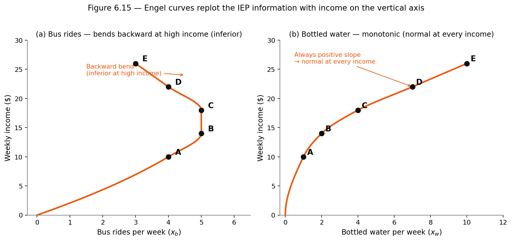
Panel (a): bus rides
Slope positive A→C, negative C→E — the backward bend marks the normal-to-inferior transition.
Panel (b): bottled water
Slope positive everywhere. Bottled water is normal at every income level — no bend.
Empirical workhorse: income on the vertical axis is directly observable; slope at any point = local \(\varepsilon_I\). BLS CEX data plotted this way gives Engel's law (food share falls with income).
Application — Aguiar & Bils on restaurants as luxury
Aguiar & Bils (2015, AER, DOI 10.1257/aer.20120599) estimated Engel curves on CEX + PSID data for a wide range of consumer goods. Two headline findings:
Food at home
\(\varepsilon_I \approx 0.4\)
Necessity. +10% income ⇒ +4% spend.
Restaurant meals
\(\varepsilon_I \approx 1.3\)
Luxury. +10% income ⇒ +13% spend.
Why it matters
3-to-1 luxury-vs-necessity gap. As US incomes have risen over the past 50 years, restaurant spending has grown about three times faster than grocery spending.
The long-run US restaurant boom — chains, delivery apps, ghost kitchens — is partly the mechanical consequence of an \(\varepsilon_I = 1.3\) good in a rising-income economy.
Application 6.1 below (the gas-elasticity story) is the price-channel analog. Aguiar & Bils give the income-channel benchmark — two empirical anchors for the chapter's two channels.
§6.2 How price changes affect consumption choices
Substitution and income effects on an indifference map
Deriving a demand curve
Just as income shifts the bundle (§6.1), changes in relative prices — holding income constant — also reshape consumer choices. We now build Sam's individual demand curve directly from his utility model.
The recipe
A demand curve maps quantity demanded to price, holding income and other prices fixed.
To trace it, change one price on the indifference-map / budget-constraint figure and read off the new optimum.
Each price → one optimum → one \((Q, P)\) point on the demand curve.
Connect the points to get the consumer's demand curve for that good.
The observed price represents the consumer's maximum willingness to pay for the last unit consumed — the inverse-demand interpretation we use in welfare analysis (Ch 2 CS, Ch 6.7 CV).
Building Sam's Netflix demand curve
Netflix is $4
The budget line reaches 15 subs. Sam’s best bundle sits where it just touches an indifference curve: 5 Netflix.
Carry it straight down
Same quantity, one panel lower. That is the point (5, $4) — the first point of a demand curve.
Raise it to $6
The budget swings in, the tangency slides left to 3.33. Down it goes: (3.33, $6).
…and again
At $12 only 1.67 subs are left. (1.67, $12).
Join the three dots
That is Sam’s demand curve. Nothing about Sam changed — we asked the same question at three prices.
One thing never moved
Every tangency sits at 6.67 Spotify. With Cobb–Douglas, Sam always spends two-thirds on Spotify, whatever Netflix costs.
Shifts in the demand curve
Movement along the demand curve answers “more Netflix at lower price.” A shift of the whole curve answers a different question: at the same price, has the consumer's demand changed?
What shifts the curve
Preferences change (taste shock; new info; ad campaign).
Income changes (the §6.1 channel).
Prices of other goods change (cross-price effects).
Sam's preference shock
Suppose Sam starts listening to more new music (podcasts, lossless audio) and values Netflix less, relatively speaking. His Cobb-Douglas weight \(\alpha\) on Netflix drops from \(1/3\) to \(1/5\).
At every Netflix price, Sam wants fewer Netflix subs — the whole demand curve shifts inward.
Mechanism: with lower \(\alpha\), Sam's indifference curves flatten in the Netflix direction — tangency on the same budget line now sits further left.
A preference change shifts Sam's demand
On screen already
The three budget lines, Sam’s three old bundles and the demand curve \(D_1\) we just built — all in grey.
Sam’s taste changes
Netflix now carries less weight: \(\alpha\) falls from 1/3 to 1/5. The indifference curves get flatter. Prices and income are untouched.
Every tangency slides left
Same budget lines, new curves, new touching points: 3, 2, 1 subs instead of 5, 3.33, 1.67.
Carry them down
Three new points, each to the left of the old hollow one.
The whole curve moves
\(D_1 \to D_2\). The whole curve moved. No price changed, so this is a shift, not movement along the curve.
Starting point — what happens when the price changes?
Setup — meet Sam
Sam picks \(E_1\) (tangent to \(BC_1\) on \(U_1\)). Price of good 1 falls; new optimum \(E_2\) on higher curve \(U_2\).
The BTS question
Why did Sam re-optimize? How is the consumer reading the price-change signal? What logic moved \(E_1\) to \(E_2\) behind the scenes?
Two things changed at once:
Relative prices ⇒ substitution channel.
Purchasing power ⇒ income channel.
Next three slides: isolate substitution, isolate income, then recombine as Total = Sub + Inc.
Two generic normal goods here on purpose — the split does not depend on which goods they are, and a picture where both axes move shows both legs. §6.3 redoes it with Sam’s actual Netflix and Spotify numbers.
Poll: your boba gets cheaper — and then I take the savings back
Your boba place drops a large milk tea from \$6 to \$3. You were buying two a week.
Now the thought experiment: I take back exactly enough of your money that you end up no better off than you were this morning — not a dollar more, not a dollar less. Exactly as happy as before.
Do you buy more boba that week, less, or the same?
A) Less — you just took money off me
B) More — boba is cheaper relative to everything else now
C) The same — I’m exactly as well off, so my basket doesn’t change
D) Depends on how much I happen to like boba
60 sec to vote
Answer: B — more boba, and I can prove it without knowing if you like boba
You buy more. At \$3 you could buy your same two cups and pocket
\$6 — that \$6 is the gain I took back. What is left is not extra money at all: it is that a boba now costs
half a sandwich instead of a whole one. That alone moves you toward boba.
A is the error that costs the most. Being short of money is the other channel. I removed the
savings precisely so it cannot contaminate this one — that is the entire point of taking it back.
C is the one that quietly breaks the chapter. Same happiness with a different basket is exactly
what moving along one indifference curve means. If your basket could not change, there would be no substitution effect
to find at all.
And D is wrong, which is the surprising part. Convexity alone settles it: on a single curve, a flatter
price line can only touch it further along, toward whatever got relatively cheaper. Your taste for boba sets
how much more — never whether.
That new basket has a name — the compensated optimum — and constructing it is the next slide.
Substitution effect — isolate channel #1
Sam's thought experiment. Hold Sam's utility at \(U_1\) (the original level). At the new price ratio, what bundle would Sam pick?
The trick
Shift \(BC_2\) inward (same new slope) until it's tangent to the old IC \(U_1\). Call it \(BC'\). Tangency point = \(A'\).
Substitution effect = movement \(A \to A'\) along the original indifference curve \(U_1\). Pure relative-price reallocation; real utility constant.
Always non-positive in own price. Good 1 became relatively cheaper, so Sam substitutes toward good 1. This is a theorem — convexity of preferences guarantees the direction.
In the figure. Good 1: \(3 \to 4.24\) (\(+1.24\) sub). Good 2: \(4 \to 2.24\) (\(-1.76\) sub).
Income effect — isolate channel #2
Sam's second move. The price fell, so Sam's real purchasing power increased: with \(BC_2\), Sam can afford a bigger bundle than \(BC'\) allows.
The shift
\(BC' \to BC_2\): a parallel shift outward (same new slope). Sam moves from \(A'\) on \(U_1\) up to \(B\) on the higher \(U_2\).
Income effect = movement \(A' \to B\), the change in consumption from the purchasing-power change alone. Relative prices held fixed.
Sign can flip:positive for a normal good (reinforces substitution), negative for inferior (partially offsets), large negative for a Giffen good (overpowers substitution).
Good 1 gets cheaper, so the budget pivots out: \(BC_1 \to BC_2\). Sam re-optimises from \(A=(3,4)\) on \(U_1\) to \(B=(5,5)\) on the higher \(U_2\).
Total effect. Good 1: \(3 \to 5\) (up 2). Good 2: \(4 \to 5\) (up 1).
What the data records
Only \(A \to B\). The substitution and income pieces are not separately observable — recovering them needs the compensated-budget thought experiment.
Next slide turns that thought experiment into a three-step recipe.
Three steps to compute substitution + income effects
Start from the optimum \(A\) on \(BC_1\) and \(U_1\), then follow the numbers in the figure:
Step 1 — the new budget
Draw \(BC_2\): the price change pivots \(BC_1\). Find the new optimum \(B\), on the higher curve \(U_2\).
Step 2 — the compensated budget
Slide a line parallel to \(BC_2\) back in until it is tangent to the old curve \(U_1\). Call it \(BC'\); its tangency is \(A'\).
Step 3 — read it off
Substitution \(=A \to A'\) along \(U_1\). Income \(=A' \to B\). Total \(=A \to B=\) Sub \(+\) Inc.
Only step 2 is a thought experiment. Steps 1 and 3 are what you would see.
You try — inferior good case
Setup. Sam eats steak (normal) and ramen (inferior). The price of ramen falls, and Sam moves from \(A\) to \(B\). Press → to take it apart.
Step 1 — substitution
Ramen is relatively cheaper, so Sam slides along \(U_1\) toward it: ramen +1.5, steak −0.5.
Step 2 — income
The price fall leaves Sam better off. Steak is normal and rises +1.25; ramen is inferior and falls−0.5 — the income effect pushes back.
Step 3 — which one wins?
Ramen: substitution (+1.5) beats income (−0.5) ⇒ net +1.0. Steak: income (+1.25) beats substitution (−0.5) ⇒ net +0.75. Both rise — for opposite reasons.
Simple rules — substitution vs. income effects
Substitution effects
comparing two bundles on the same indifference curve
Direction is unambiguous — a theorem, not a finding.
Relative price falls ⇒ the consumer wants more of it.
Relative price rises ⇒ the consumer wants less.
Why no ambiguity? Convex indifference curves. Sliding along a fixed \(U\) always moves you toward whatever got cheaper.
Income effects
comparing bundles on two different indifference curves
Direction is ambiguous — it depends on the good.
Normal good: a fall in either price ⇒ wants more. Any price drop raises real income.
Inferior good: that same price drop ⇒ wants less. The income term flips.
A price rise mirrors both: normal ⇒ less, inferior ⇒ more.
What we actually observe is the total effect \(=\) unambiguous substitution \(+\) ambiguous income. The ambiguity in demand comes from one of the two channels, never both.
A change in the price of a substitute good
At the old prices
This consumer buys 15 litres of Pepsi and 5 litres of Coke, at point \(A\).
Pepsi doubles
The budget pivots inward on the Pepsi axis: \(BC_1 \to BC_2\).
The new bundle
Pepsi falls 67% (15 \(\to\) 5 L); Coke rises 100% (5 \(\to\) 10 L), at the new optimum \(B\).
Coke rose when Pepsi got dearer — so they are substitutes.
Uber vs Lyft, butter vs margarine, iPhone vs Android: cross-price elasticity is positive, the empirical signature of substitutes.
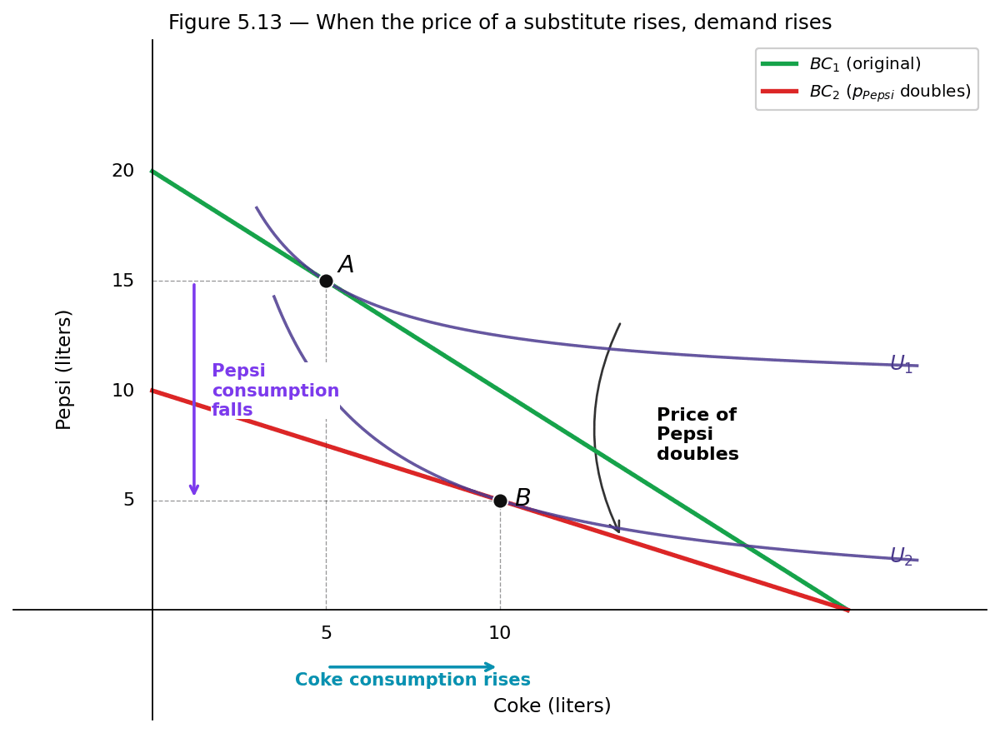
A change in the price of a complementary good
At the old prices
This consumer buys 20 gallons of ice cream and 30 quarts of hot fudge, at point \(A\).
Ice cream gets dearer
The budget pivots inward on the ice-cream axis: \(BC_1 \to BC_2\).
The new bundle
Ice cream falls 25% (20 \(\to\) 15 gal) — and hot fudge falls too, by 33% (30 \(\to\) 20 qt), at \(B\).
Hot fudge fell when ice cream got dearer — so they are complements.
Printers and ink, consoles and games, phones and cases: cross-price elasticity is negative, the signature of complements.
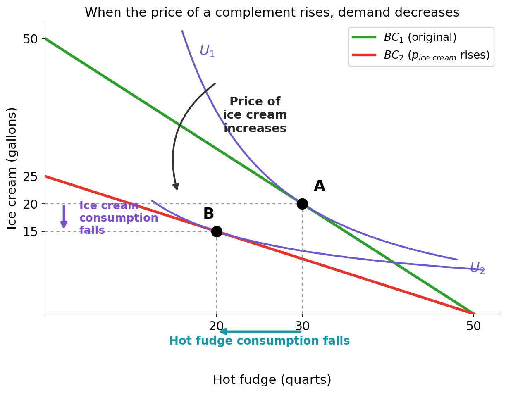
Summary — cross-price effects
Substitute
When the price of a substitute good increases, consumption of the primary good increases.
These relationships help to explain the shifts in demand examined in Ch 2 (Principles). Sign of cross-price elasticity \(=\) classification: positive \(\Rightarrow\) substitute, negative \(\Rightarrow\) complement. The Slutsky equation (next section) reveals the substitution-vs-income split inside that sign.
Cross-price effects shift the demand curve
A cross-price effect does not move you along good X's demand curve — it shifts the whole curve.
Rightward: \(D_1 \to D_2\)
More of good X wanted at every price. Happens when the price of a substitute rises, or the price of a complement falls.
Leftward: \(D_1 \to D_3\)
Less of good X at every price. Happens when the price of a substitute falls, or the price of a complement rises.
Connects the Ch 2 “demand shifters” list to Ch 6’s consumer optimisation — the list was the what; this is the why.
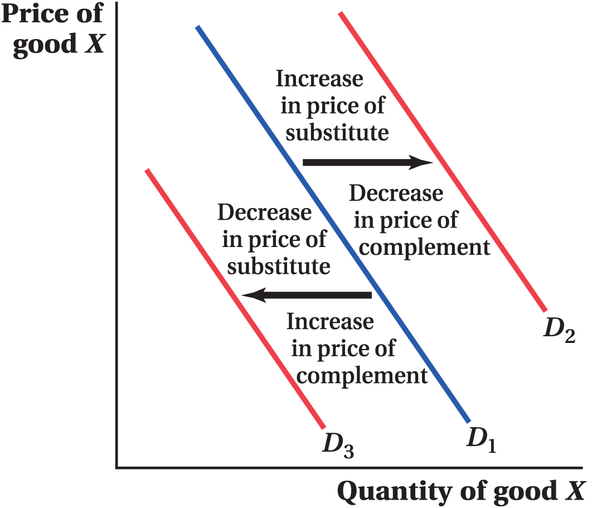
Application — movies: theaters vs. home streaming
The pandemic as a natural experiment
COVID-19 effectively raised the “price” (risk + closures) of going to a theater. So which way did home streaming move?
If theaters and streaming were complements \(\Rightarrow\) streaming should have declined too.
If they were substitutes \(\Rightarrow\) streaming should have surged.
The verdict — they are substitutes
Theater box office: U.S. revenue collapsed from \(\$11.3\,\text{B}\) in 2019 to \(\$2.1\,\text{B}\) in 2020.
Home streaming: Netflix subscriptions grew +45%; Disney+ reached 40 M U.S. subscribers.
Not new — the substitution accelerated a historical pattern: in 1946 the average American went to the movies 28 times/year; a decade later, with TVs widespread, that number was cut in half. COVID just compressed decades of substitution into one year.
Combining individual demand curves
The final step linking consumer theory to market demand:
Market demand is the horizontal sum of individual demand curves.
At each price, the market quantity demanded is the sum of individual quantities demanded at that price.
The market demand curve is found by summing horizontally the individual demand curves.
Consider the market for video games: Priya buys day-one; Diego only buys on sale.
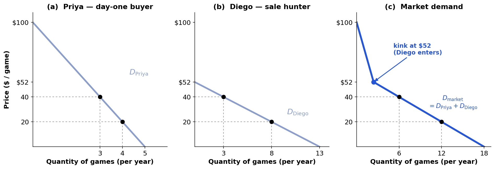
Market demand — the math
Mathematically connecting individual and market demand — Priya (day-one buyer) and Diego (sale hunter):
The two consumers have different choke prices (the price where individual quantity hits zero):
Priya's is \(\$100\) — she pays deluxe-edition prices; Diego's is \(\$52\) — he never pays more than about fifty.
The combined formula above is valid only when both are buying.
The market demand has a kink at \(P = \$52\): above it only Priya buys; the moment a sale drops the price below \$52, Diego enters and demand bends sharply flatter — which is precisely why Steam sales exist.
Two problems, one optimum: primal vs. dual
PRIMAL (Ch 5)
Utility maximization at given prices and income.
\[\max_{x_1, x_2 \geq 0}\; U(x_1, x_2)\;\;\text{s.t.}\;\; p \cdot x \leq I.\]
Expenditure minimization at given prices and a utility floor.
\[\min_{x_1, x_2 \geq 0}\; p \cdot x \;\;\text{s.t.}\;\; U(x) \geq \bar u.\]
Output: Hicksian (compensated) demand \(h_i(p, \bar u)\) + expenditure function \(e(p, \bar u) = p \cdot h\).
Why the dual matters. The Hicksian demand isolates the substitution channel by construction — utility is held fixed, so any price-response is pure relative-price reallocation. That isolation is what makes the Slutsky decomposition possible.
The expenditure function \(e(p, \bar u)\)
\[e(p, \bar u) \;\equiv\; \min_{x \geq 0} \;\{\, p \cdot x \,:\, U(x) \geq \bar u \,\}\;=\; p_1 h_1(p,\bar u) + p_2 h_2(p, \bar u).\]
The minimum dollar cost of reaching utility \(\bar u\) at prices \(p\). The five properties that fall out of the definition:
1. Non-dec.
in each \(p_i\) — higher prices, weakly more cost.
2. HOD 1
in \(p\): \(e(\alpha p, \bar u) = \alpha\, e(p, \bar u)\). Inflate all prices, cost inflates the same.
3. Concave
in \(p\) — consumer can re-optimize when a price rises.
4. Continuous
in \((p, \bar u)\) — small changes, small cost changes.
5. Inc. in \(\bar u\)
reach a higher floor ⇒ pay more (locally non-satiated \(U\)).
Concavity intuition. If \(p_1\) rises, the consumer substitutes away from good 1 along the original indifference curve, so cost rises by less than the “keep buying the same bundle” counterfactual — that's concavity.
Definition — non-satiation
Non-satiation (or non-satiety) is the core assumption that consumers always prefer more of a good to less. “Locally non-satiated” weakens this: at every bundle, some nearby bundle is strictly preferred. It rules out flat or saturated indifference curves and pins the budget constraint as a binding equation at the optimum — which is why property 5 holds.
Hicksian demand and the duality identity
Hicksian (compensated) demand
The expenditure-minimizing bundle at prices \(p\) and utility floor \(\bar u\):
\(h_i(p, \bar u) = \arg\min\,\{\, p \cdot x : U(x) \geq \bar u \,\}.\)
Read it as: “what bundle does the consumer buy when utility is held fixed and only relative prices change?” The Hicksian demand traces out a curve in \((p_1, x_1)\) space along a single indifference curve.
At the same prices and the same utility floor, the Marshallian demand evaluated at the minimum cost \(e(p, \bar u)\) is exactly the Hicksian demand. Same bundle, two paths to it.
Why this is the lever. Differentiate the duality identity in \(p_j\) and you get the Slutsky equation in one line. The next part builds that derivation.
Poll: Which is FALSE about \(e(p, \bar u)\)?
For a locally non-satiated, continuous utility \(U\), which of the following statements about the expenditure function \(e(p, \bar u)\) is false?
A) \(e\) is non-decreasing in every \(p_i\)
B) \(e\) is convex in \(p\)
C) \(e\) is homogeneous of degree 1 in \(p\)
D) \(e\) is non-decreasing in \(\bar u\)
60 sec to vote
Answer: B — \(e\) is concave in \(p\), not convex
Intuition. If \(p_1\) rises, the consumer substitutes away from good 1 along \(\bar u\) (panel a). So minimum cost rises by less than proportionally — \(e\) bends down (concave), not up (convex). The straight line in panel (b) is what cost would be if the bundle were frozen; the gap is the substitution saving.
Other distractors. A, C, D are all true: \(e\) is non-decreasing in each \(p_i\), homogeneous of degree 1 in \(p\), and increasing in \(\bar u\). Note: the dashed line is tangent at \(p_1^0\) with slope \(x_1^0\) — that tangency is Shephard's lemma.
§6.3 The Slutsky equation
25 min · The chapter's headline identity, two walkthroughs
The Slutsky equation
For any pair of goods \(i, j\), any consumer with smooth preferences, evaluated at the bundle that achieves utility \(\bar u = v(p, I)\):
How Marshallian (actual) demand responds to a price change. Both channels mixed.
RHS: the decomposition
Hicksian response (pure substitution) minus the dollar value of \(x_j\) times income response.
The income term is multiplied by \(x_j\) because a unit rise in \(p_j\) costs the consumer roughly \(x_j\) extra dollars to keep buying the original bundle — that's the “real income loss” we have to subtract back out.
Step 2. Apply Shephard's lemma — the derivative of the expenditure function in \(p_j\) is the Hicksian quantity \(h_j\); you saw its geometry on the concavity figure, where the tangent's slope was \(x_1^0\). It's an envelope-theorem result — proof in §6.5; take it on faith today:
Figure 6.1 — the Slutsky decomposition in indifference-curve space.
What to look at:
Three budget lines. Original; new (steeper after \(p_1 \uparrow\)); compensated (parallel to new, shifted to be tangent to the original indifference curve).
Three optima. Original \((x^A)\), compensated \((x^B)\), new \((x^C)\).
Substitution arrow runs from \(x^A\) to \(x^B\) along the original indifference curve: pure relative-price reallocation.
Income arrow runs from \(x^B\) to \(x^C\): parallel inward shift, no slope change — pure loss of real income.
Sub. always \(\leq 0\) along original IC for own-price; income depends on sign of \(\partial x_1/\partial I\).
Sam has \$60/month to split between Netflix at \$4/mo and Spotify at \$6/mo. Cobb-Douglas tastes with \(\alpha=1/3\) on Netflix means he likes Spotify roughly twice as much, dollar-for-dollar. Then Netflix bumps its price to \$6/mo — same as Spotify. How much less Netflix does Sam buy, and why?
Our job
Split the total drop in Netflix subs into substitution (Spotify is now relatively cheaper, so Sam pivots) plus income (\$60 doesn't go as far — Sam is poorer in real terms).
Two formulas we'll use
Marshallian (Ch 5): how much Sam buys at given prices with his \$60.
Hicksian (today): how much Sam would buy if we paid him to stay at his original happiness.
That \(-1.67\) is the total move. But why did Sam cut Netflix? Two reasons, mixed together: relative prices changed AND he's effectively poorer. To split them, we need a thought experiment — the Hicksian.
The trick. Sam's starting happiness is \(\bar u_0 = U(5, 20/3) = 5^{1/3}(20/3)^{2/3} \approx 6.058\). Pretend a generous friend hands Sam just enough extra cash to stay at that happiness even after the price hike. What would he buy? That bundle (Hicksian) is what we'll compare against.
Plan: find Hicksian \(A'\) at new prices, then Sub \(= A\to A'\) and Inc \(= A'\to B\).
Press Space to reveal · ↓ to advance to the solve slide.
If a generous friend paid Sam to stay at his old happiness \(\bar u_0 = 6.058\) at the new prices (\(p_1 = p_2 = \$6\)), how many Netflix subs would he buy? Use Hicksian demand:
\(h_1(p, \bar u) = \bar u \!\left(\dfrac{p_2}{2 p_1}\right)^{\!2/3}\)
1 min — plug in \(p_1 = p_2 = 6,\; \bar u_0 = 6.058\)
Falls out of concavity of \(e(p, \bar u)\) in \(p\): the diagonal of the Hessian of a concave function is \(\leq 0\). Shephard's lemma converts that into \(\partial h_i/\partial p_i \leq 0\).
Why students miss this
They confuse it with the Marshallian \(\partial x_i^M/\partial p_i\), which can be positive (Giffen good). The point of the decomposition: substitution always pulls demand down; income can push it up enough to overpower substitution.
Operational consequence. If you ever derive a substitution effect with the “wrong” sign, you have a sign error in the algebra. Use this as a self-check on every Slutsky computation.
Walkthrough 6.2 — Ana's soda: setup
Ana's situation — the soda double
Ana spends \$20/week on soda (\$1/can) and a generic “everything else” bundle (\$1/unit). Her tastes are quasilinear: \(U = 6\sqrt{x_1} + x_2\) — she enjoys soda with diminishing returns, and the rest scales 1-for-1 with spending. Soda doubles to \$2/can. How does Ana respond, and what dollar “raise” would make her whole?
Our job (two surprises ahead)
(1) Show the income piece on soda is exactly zero — the trademark of quasilinear tastes. (2) Compute Ana's compensating variation (CV) — how many extra dollars she'd need to be just as happy as before.
Compensating variation (CV) — quick definition
CV \(\equiv e(\mathbf{p}', \bar u_0) - I\) is the extra dollars the consumer would need at the new prices to stay at the old utility \(\bar u_0\). Here: after Ana's soda doubles, CV is the cash “raise” that would make her just as happy as before — a money-metric welfare loss (want to know more? read §6.7).
Set up the FOC (MRS = price ratio)
\(MU_1 = 3/\sqrt{x_1}\), \(MU_2 = 1\); set \(MU_1/p_1 = MU_2/p_2\):
The formula \(x_1^M = (3 p_2/p_1)^2\) has no \(I\) in it! So giving Ana more income doesn't change how much soda she buys:
\(\dfrac{\partial x_1^M}{\partial I} = 0.\)
Why? Every extra dollar flows into “everything else” \(x_2\) — that bundle has constant marginal utility 1, so it absorbs all income changes. Soda just hits its “happy point” and stops.
Plug in the numbers
Before (\(p_1 = \$1\)): \(\;x_1 = (3 \cdot 1/1)^2 = 9\) cans; spends \$9 on soda, \$11 on other stuff. After (\(p_1 = \$2\)): \(\;x_1 = (3/2)^2 = 2.25\) cans.
Press Space to reveal · ↓ to advance to the solve slide.
Sub + Inc \(= -6.75 + 0 = -6.75\) ✓ matches the total drop.
Hicksian \(=\) Marshallian here (because income piece is zero).
\$4.50 ≈ the area under Ana's demand curve from \$1 to \$2 — just like Ch 2 consumer surplus.
Take-home. When tastes are quasilinear, the welfare loss from a price hike is just the area under the demand curve — no Slutsky correction needed. That's why economists love this case for policy work.
Ana's Soda in pictures
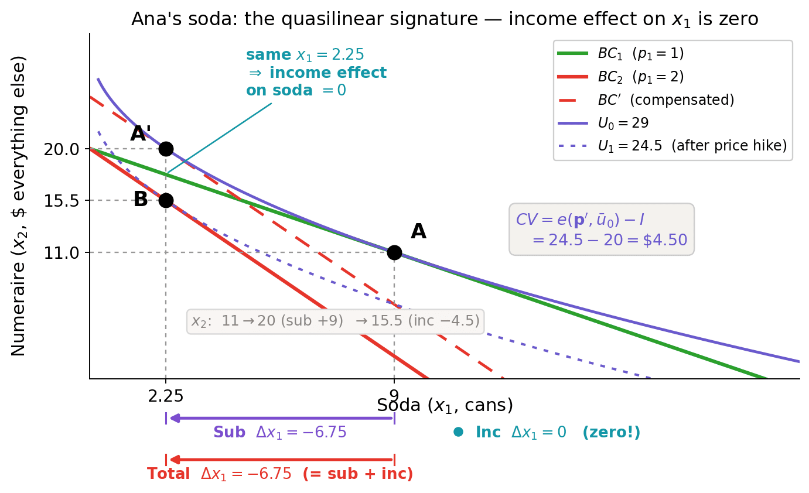
What to read off the picture:
\(A = (9, 11)\) — original Marshallian, on \(BC_1\) and \(U_0 = 29\).
\(A' = (2.25, 20)\) — Hicksian (compensated) optimum at the new prices: cheapest bundle on the same IC \(U_0\). Sub slides along \(U_0\): \(A \to A'\).
\(B = (2.25, 15.5)\) — new Marshallian optimum on the lower IC \(U_1 = 24.5\). Income drops Ana from \(A'\) to \(B\): only \(x_2\) falls.
The visual signature. \(A'\) and \(B\) sit on the same vertical line \(x_1 = 2.25\). The income move \(A' \to B\) is purely vertical — zero income effect on soda.
Compare W6.1 (Sam): A' and B sit on a slanted line because Netflix has a non-zero income effect. The vertical alignment here IS quasilinearity.
When does Marshallian \(=\) Hicksian in real life?
The two demands coincide whenever the income effect on the good is approximately zero. That happens in four real-world settings:
Small-share, low-frequency goods
Toothpaste, matches, salt, postage stamps. Even if the price doubles, total spending barely budges, so the income channel is negligible. The whole demand response is substitution.
Daily-routine fixed-quantity goods
Morning coffee, bus fare, parking pass. You buy the same quantity regardless of small income changes — demand is income-inelastic by habit.
Small policy changes
\$0.05 gas tax, \$2 movie-ticket fee, \$0.10 plastic bag fee. The dollar change is so small the income effect on the consumer's overall budget is essentially zero. Economists routinely use the Ch 2 consumer-surplus area as an approximate CV (Willig 1976, Hausman 1981).
Quasilinear models in IO / public finance
Antitrust analysis, optimal-tax models, mechanism design all assume \(U = \phi(x_1) + x_2\) precisely because welfare \(=\) the integral under the demand curve, no further correction needed.
Counter-examples (where Marshallian \(\ne\) Hicksian): housing, healthcare, college tuition, big-ticket durables. Large budget shares + strong income elasticity \(\Rightarrow\) Marshallian and Hicksian diverge sharply, and welfare analysis must use the full Slutsky machinery.
CV in practice — antitrust & merger analysis
Regulators and economists use CV to put a dollar number on consumer harm from a price increase — the core empirical input to merger and antitrust decisions.
The DOJ/FTC merger playbook
Estimate the post-merger price increase (UPP / GUPPI / simulation).
Multiply by quantity to get aggregate CV — the dollar value of consumer harm.
Compare against merger-specific efficiencies (cost savings passed to consumers).
Block / challenge / clear based on net welfare effect.
Concrete cases — CV at work
T-Mobile / Sprint (2020): DOJ estimated CV \(\approx\) \$1.5–\$5 B/yr in higher wireless bills; cleared with divestiture (Dish enters as 4th carrier).
Hospital merger studies (Cooper et al. 2019): CV from local hospital mergers averages 1–3% of healthcare spending in concentrated markets.
Ticketmaster / Live Nation (2010): CV estimates for higher concert prices were key to the conduct-remedy decree.
Ana's shortcut — but only approximately. Wireless plans, hospital visits and concert tickets are large dollar shares of a household budget, so the income effect isn't zero the way it was for Ana's soda — strictly, \(CV \ne\) consumer surplus here. But for small price changes (say, a 5% increase from a merger) that income effect is tiny, so the Ch 2 area under demand approximates CV well enough for legal decisions. Hausman (1981) makes the approximation rigorous.
CV is what the Slutsky machinery is for in policy — not just a homework variable.
Poll: Zero income effect on good 1
If \(\partial x_1^M/\partial I = 0\) for good 1, the Slutsky equation tells us that…
A) The Marshallian and Hicksian demand for good 1 coincide
B) Good 1 must be inferior
C) Good 1's price elasticity is zero
D) The compensating variation equals the dollar change in income
Distractors: B confuses zero income effect with inferior; C confuses income elasticity with price elasticity; D mixes Slutsky with the CV formula (which needs a definite integral, not just Slutsky).
Bridge — the algebra dictates the taxonomy
The Slutsky equation has two sign-bearing pieces. Substitution is always \(\leq 0\) (own-price). Income can be either sign depending on \(\partial x_i^M/\partial I\). Six logical combinations — only three matter for the Marshallian curve's slope:
Normal good
\(\partial x_i^M/\partial I > 0.\) Income effect reinforces substitution. Marshallian demand falls when \(p_i\) rises.
Inferior good
\(\partial x_i^M/\partial I < 0.\) Income effect opposes substitution; sub. dominates. Marshallian still slopes down.
Giffen good
\(\partial x_i^M/\partial I < 0\) AND large enough that income overpowers substitution. Marshallian slopes up.
§6.4 builds the taxonomy with three figures, three walkthroughs, and three HeadsUps.
35 min · Three categories, three walkthroughs (Carlos, Chen family, Maya), two HeadsUps
The sign-pattern map
Figure 6.3 — the income term's sign decides the category; substitution is always \(\leq 0\).
The taxonomy in one picture:
Normal & ordinary. Sub \(\leq 0\), income \(\leq 0\). Both arrows point the same way. The textbook case — coffee, apartments, smartphones.
Inferior & ordinary. Sub \(\leq 0\), income \(\geq 0\) but smaller in magnitude. Sub. wins. Bus rides relative to Ubers; store-brand canned soup relative to fresh produce (Carlos's case).
Giffen. Sub \(\leq 0\), income \(\geq 0\) and larger. Marshallian curve slopes up. Real, rare, requires subsistence + low income.
Statistically: ~80% of goods are normal, ~20% inferior, < 1% Giffen.
Marshallian vs. Hicksian for a normal good
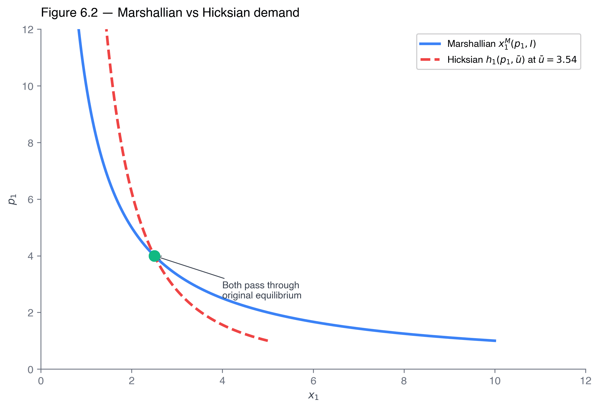
Figure 6.2 — Marshallian (solid) sits to the left of Hicksian (dashed) above the reference price.
For a normal good, the income effect reinforces substitution: when \(p_1\) rises, the consumer is also poorer, so they cut \(x_1\) further than they would have at fixed utility.
Visual diagnostic. Above the reference price, the Marshallian curve lies to the left of Hicksian. Below the reference price, Marshallian lies to the right of it. The two curves cross at the original price.
Empirical takeaway. For a normal good, Marshallian elasticity is larger in magnitude than Hicksian. The compensated (Hicksian) elasticity is the pure substitution channel; published price elasticities are typically Marshallian.
…and for an inferior good
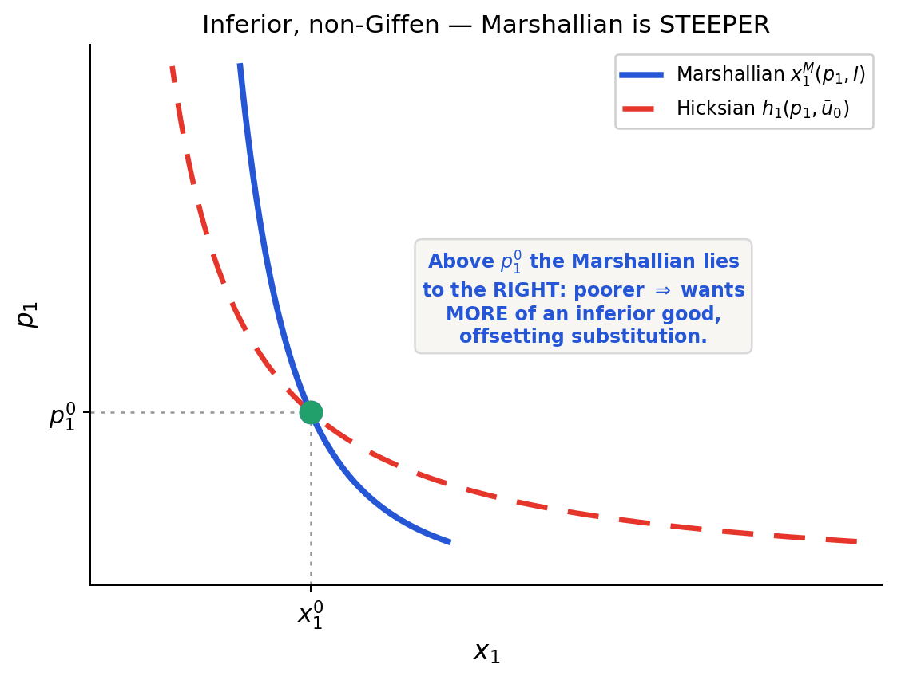
Inferior & non-Giffen
Income effect opposes substitution; substitution still dominates, so Marshallian still slopes down — but more steeply than Hicksian, because it is less price-responsive.
Visual flip: above \(p_1^0\) the Marshallian lies to the right of Hicksian — the consumer is poorer after \(p_1 \uparrow\), and being poorer makes them want more of an inferior good.
Next: W6.3 (Carlos's canned soup) makes this concrete — watch the income effect fight substitution and lose. Then we ask what happens when it wins.
Carlos runs a \$5,000/month household. He buys store-brand canned soup (\$4/can) and a basket of pantry alternatives (\$8 average). His shop raises soup to \$6. Government CEX survey data fit a linear demand for his household:
\(x_1 = 30 - 2 p_1 + 0.5 p_2 - 0.001\, I.\)
Our job
Without ever writing down a utility function, split Carlos's soup response into substitution + income. (Spoiler: soup is inferior, so the two pieces fight each other.)
Read three numbers off the demand function
How does soup respond to its own price? The coefficient on \(p_1\) is \(-2\), so \(\partial x_1/\partial p_1 = -2\) cans per \$.
How does soup respond to income? The coefficient on \(I\) is \(-0.001\) — negative, so soup is inferior. A \$1,000 raise cuts soup by 1 can/mo.
Big idea. We don't need a utility function — just the partials we just read off. This is how real economists decompose price changes from CEX or scanner data.
Watch for the surprise: for an inferior good, \(\partial x_1/\partial I < 0\). When we plug that into the income piece, the sign flips — income pushes Carlos to buy MORE soup when the price rises.
Press Space to reveal · ↓ to advance to the solve slide.
Walkthrough 6.3 — solve: sub. dominates the perverse income term
In words: Carlos cuts ~4 cans because soup is “relatively pricey now,” but adds back tiny “I'm poorer, lean into the cheap stuff.”
Step 4 — sanity check
Substitution is negative ✓ (always true for own-price).
Income is positive ✓ — the inferior-good signature.
Substitution wins by ~100× \(\Rightarrow\) soup demand still slopes down.
Take-home: inferior \(\neq\) Giffen. Carlos's income piece pulled the “wrong” way but only barely. For a Giffen good, income has to overpower substitution — that's the Giffen case — a curiosity we meet only in passing (W6.4 is in the book).
Price changes — what about Giffen goods?
Giffen goods: goods for which a fall in price leads the consumer to want less of the good.
Inferior goods, but the income effect outweighs the substitution effect.
When the price of a Giffen good drops, the substitution effect (which acts to increase demand) is smaller than the income effect.
Results in an upward-sloping demand curve.
Economists sometimes question whether Giffen goods actually exist in the real world.
The few documented examples focus on very poor households and commodity staples. The cleanest evidence is Jensen & Miller’s Hunan rice study: subsidising rice for very poor Chinese households made them buy less of it — the income effect beat substitution, exactly as the theory requires. The Irish-potato story you may have heard is not a verified case.
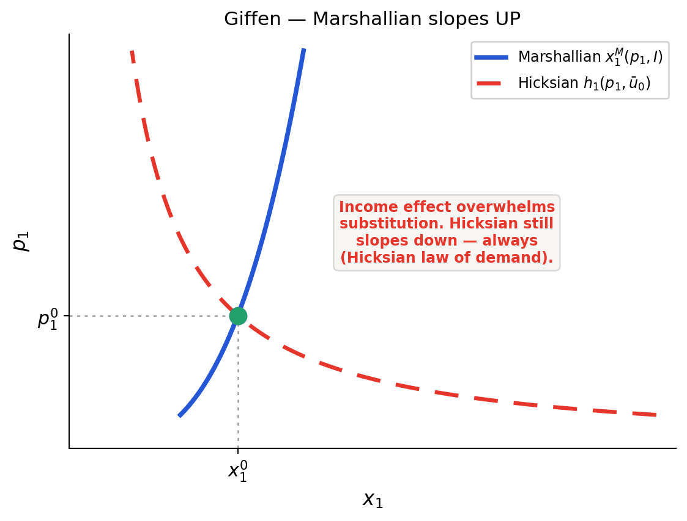
Same picture as Carlos — one change: the income effect now wins, so the Marshallian slopes up. The Hicksian still slopes down — always.
Empirical signature: a large share of a low-income household's budget, where income falling forces them to switch toward the good rather than away.
HeadsUp 6.2 — what “compensated” means
“Compensated demand” means utility is held constant, not income. Students consistently swap these.
Hicksian (compensated)
Fix the utility floor \(\bar u\). As prices change, the income required to reach \(\bar u\) changes — that's exactly \(e(p, \bar u)\). The consumer is “compensated” for the price change with whatever income keeps them on the same indifference curve.
NOT “income-held-constant”
Marshallian demand is income-held-constant: fix \(I\), let utility float. That's the consumer's actual behavior. The Hicksian thought experiment is the opposite: fix utility, let income float.
Mnemonic. Hicksian = “Hold utility”. Marshallian = “Money fixed”. The two coincide at one point (the original \((p, I)\)) and diverge as relative prices change.
Maya's wage Slutsky
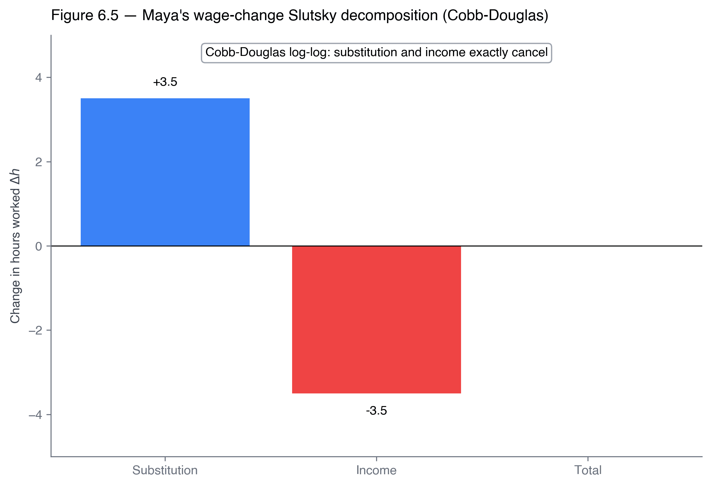
Figure 6.5 — Maya's labor-leisure Slutsky on a wage rise.
Recap from Ch 5.
Maya, freelance designer. Cobb-Douglas-log utility \(U = \log c + \beta \log \ell\). Utility weights \(\{60, 96, 732\}\) on study, consumption and leisure; the time budget is 97 hours. Wage rises from \(w = 18\) to \(w' = 24\) per hour.
Labor supply = total endowment minus leisure. We can decompose the change in hours worked using exactly the same Slutsky machinery — wage acts as the “price of leisure”.
Recurring thread: third use across the 2316 sequence. First appearance: Ch 4 (preferences). Second: Ch 5 (Lagrangian on the time budget). Today: Slutsky. Closes in Ch 19 (reading only) (monopsony).
Maya is a freelance designer with 97 free hours/wk split between studying \(s\), freelance work \(h\), and leisure \(\ell\). From Ch 5, at \(w=\$18\)/hr she works \(h^* = 8\) hr and takes \(\ell^* = 61\) hr leisure. Her wage rises to \$24/hr. Does she work more or less?
Take a moment to predict
Two pulls fight each other when wages rise: leisure is more expensive (work more) AND you're richer per hour (work less). Which wins? Make a guess before clicking.
Reframe the problem to use our tools
We pretend study is fixed at \(s=28\) (so 69 hours remain for \(h\) and \(\ell\)). Define consumption \(c = wh\) (whatever she earns) and treat leisure as a good with price \(w\). The labor problem then looks just like a regular consumer problem:
\(\max\;\; 96\ln c + 732\ln \ell \quad \text{s.t.}\quad c + w\ell = 69 w.\)
The strange result
Solving the FOCs gives the Marshallian (observed) hours of work:
Whether Maya earns \$18 or \$24 an hour, she works the same 8 hours. (Cobb-Douglas-log on \((c, \ell)\): consumption rises, leisure stays.)
But that zero hides a story. The substitution piece (“leisure costs more, work more”) is positive. The income piece (“I'm richer, take more leisure”) is negative. The two exactly cancel — a knife edge. Next slide breaks it open.
Press Space to reveal · ↓ to advance to the solve slide.
Walkthrough 6.5 — +2 sub, −2 inc, zero net
Step 1 — find the compensated bundle (point \(A'\))
“A friend pays Maya just enough to stay at her old happiness \(\bar u_0\) — now that an hour of leisure costs \$24 instead of \$18.”
Solve that compensated problem and she takes 59 hr of leisure instead of her usual 61 — so out of the 69 hours in play:
\(\boxed{\;h^H = 69 - 59 = 10\ \text{hr.}\;}\)
That single number is all the decomposition needs. It's the same Lagrangian recipe as the Cobb-Douglas dual — press ↓ if you want to see every line of it.
Step 2 — substitution piece (\(A \to A'\))
Same happiness, but leisure now costs \$24/hr instead of \$18. Compare original Maya (\(h^M = 8\)) to compensated Maya (\(h^H = 10\)):
Sign-intuition: leisure is more expensive \(\Rightarrow\) work more.
Step 3 — income piece (\(A' \to B\))
Drop the hypothetical compensation (no more “friend's cash”) — Maya is now at her actual new-wage optimum at \(w' = \$24\). Compute her real Marshallian bundle (full income \(69 \times 24 = \$1{,}656\), Cobb-Douglas shares \(96/828\) and \(732/828\)):
Flat hours in data hide two real \(\pm 2\) hr forces. Marshallian elasticity \(\approx 0.1\), Frisch \(\approx 0.5\): the gap is the income effect (Sigurdsson 2025).
FYI — Walkthrough 6.5: where \(h^H = 10\) comes from
Not lectured — here so you can reproduce it. It is the same Lagrangian recipe as CalculusCorner 6.1, just applied to \((c, \ell)\) instead of two goods.
(a) Minimize spending subject to holding old happiness:
All five rows commit to homework problems 1–6. Roy's identity recovers row 1 from row 3, and Shephard's lemma row 2 from row 4. Ch 8 states and applies Shephard; the derivations are in the book (§6.5).
How it all fits together — the duality map
Same objects as the summary table — now with the arrows that move between them.
Only two things are primitive: the two optimization problems. Everything else on this map is recovered from them — which is why the whole chapter reduces to one picture.
Key takeaways
The Slutsky equation decomposes any Marshallian price response into substitution (Hicksian, fixed utility) and income (Marshallian, \(x_j \cdot \partial x_i^M / \partial I\)) effects.
The expenditure function \(e(p, \bar u)\) is concave in \(p\), non-decreasing in each argument, HOD 1 in \(p\). Its derivative in \(p_j\) is Hicksian demand — Shephard's lemma.
The own-price Hicksian substitution effect \(\partial h_i/\partial p_i\) is always \(\leq 0\). Marshallian own-price effect can flip sign for inferior + budget-share-heavy + subsistence goods — the Giffen good.
Maya's knife-edge: with Cobb-Douglas-log preferences, substitution and income exactly cancel on a wage change — Marshallian labor supply has zero elasticity. Real labor-supply data (Sigurdsson 2025) shows non-zero Marshallian elasticity \(\approx 0.1\); the gap is utility-function shape.
Policy. Price subsidies and cash transfers are not equivalent. The Slutsky structure tells you which channel each policy targets and which households benefit most.
Key terms
Marshallian demand \(x_i^M(p, I)\)
Hicksian (compensated) demand \(h_i(p, \bar u)\)
Expenditure function \(e(p, \bar u)\)
Indirect utility \(v(p, I)\)
Duality identity
Slutsky equation
Substitution effect
Income effect
Normal good / inferior good / Giffen good
Engel curve
Roy's identity (forward, Ch 8)
Shephard's lemma (forward, Ch 8)
Compensating variation (forward, §6.7)
Compensated vs. income-held-constant
All terms defined inline at first appearance in the chapter; consolidated glossary in textbook end-matter.
Next class — Ch 7: Production Functions
Bring with you
The Slutsky equation in your head, written from memory
Ch 6 §6.6 (market demand) — Roy and Shephard are Ch 8 this term
Ch 7 §7.1–7.2 (production functions, MP_L, MP_K)
Math Appendix B.3 (envelope theorem)
HW §6 due before next class. Problems mirror today's walkthroughs (W6.1 Sam Cobb-Douglas, W6.2 Ana quasilinear, W6.3 Carlos inferior, W6.5 Maya labor-leisure). W6.4 (Chen family, Giffen) is in the book — we only touch Giffen briefly in class, so read that one yourself. Problems 6, 8 (Hicksian elasticities, sign theorems) are optional challenge.
Questions?
Office hours · Tue/Thu 2:00–3:30 pm · 308 Lake Hall
“Substitution is a theorem; income is an empirical question.” — the Slutsky lesson, in one sentence.

![Two panels. (a) Indifference curve u-bar with three budget lines: p1=1 tangent at A=(10,10) costing 20; p1=4 tangent at A'=(5,20) costing 40 after substituting away from good 1; and a dashed parallel line through A costing 50 if the bundle were held fixed — so re-optimizing saves 10. (b) Minimum expenditure e(p1)=20*sqrt(p1) drawn as a concave blue curve lying below the straight dashed line 10*p1+10 (the cost of the fixed bundle A), tangent to it at p1=1; the gap at p1=4 is the substitution saving. Quadrupling p1 only doubles cost — e rises less than linearly, hence concave.](figures/figure-6-e-concavity.png)
![Duality map of consumer theory. Left column is the primal (utility maximization), right column is the dual (expenditure minimization). Top row: Marshallian demand x^M(p,I), what we observe, and Hicksian demand h(p,u-bar), the compensated thought experiment; they are linked by the duality identity h(p,u-bar) = x^M(p, e(p,u-bar)) and, at the top, by the Slutsky decomposition, which says the observed price slope equals the Hicksian (substitution) slope minus the income term. Bottom row: indirect utility v(p,I) and the expenditure function e(p,u-bar), which are inverses: e(p, v(p,I)) = I. Roy's identity recovers Marshallian demand from indirect utility and Shephard's lemma recovers Hicksian demand from the expenditure function — both are Ch 8 material this term, shown here only so the map is complete; going the other way, v = U(x^M) and e = p times h. The envelope theorem sits underneath as the single result that delivers both recovery rules.](figures/figure-6-duality-map.png)